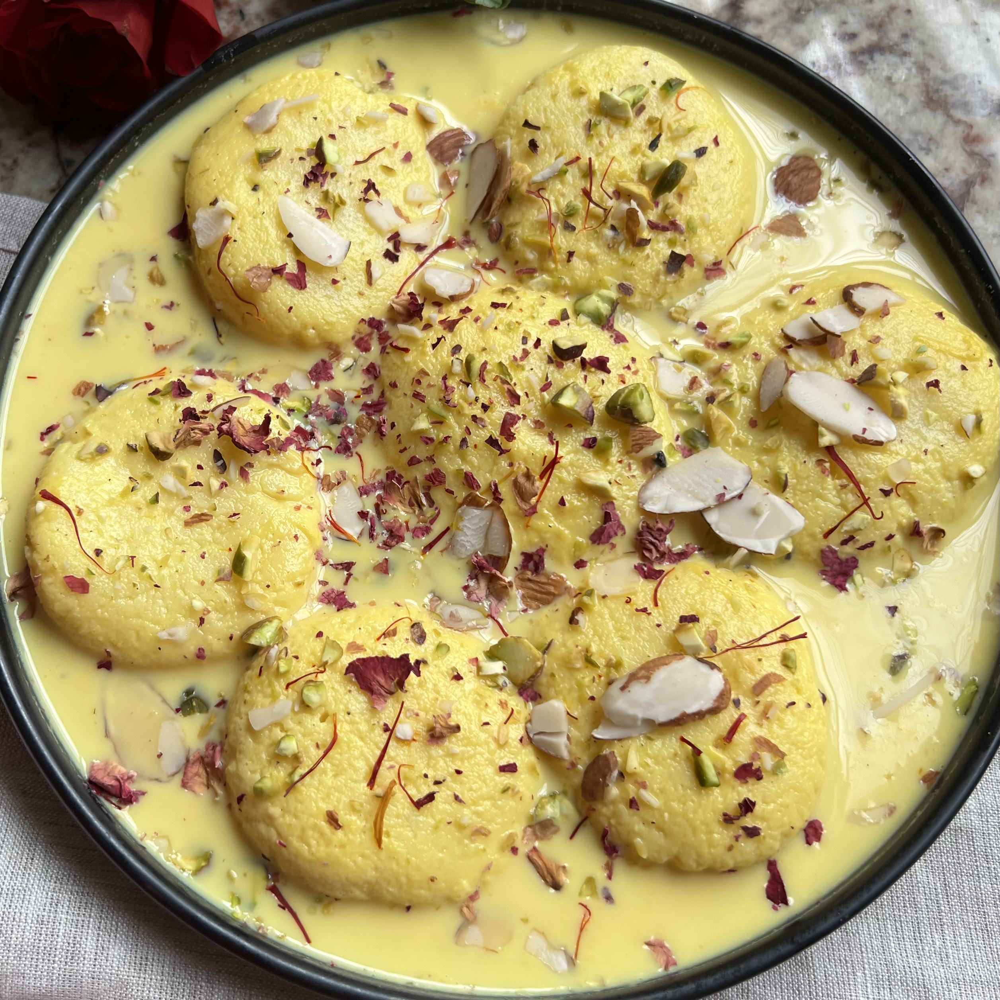

SMOKED PORK
Ingredients:
- 500g pork
- 2 tbsp mustard oil
- 2 onions (sliced)
- 2 tomatoes (chopped)
- 1 tsp ginger-garlic paste
- Salt & spices as needed
Instructions:
- Heat oil and fry onions until golden.
- Add ginger-garlic paste and cook for 2 minutes.
- Add tomatoes and spices, cook until soft.
- Add pork, cover and cook until tender.
- Serve hot with rice.

VEGETABLE BIRYANI
Ingredients:
- 2 cups basmati rice
- 1 cup mixed vegetables (carrot, beans, peas, potato)
- 2 onions (sliced)
- 2 tomatoes (chopped)
- 2 tsp biryani masala
- 2 tbsp oil / ghee
- Salt to taste
Instructions:
- Wash and soak rice for 30 minutes.
- Heat oil and fry onions until golden brown.
- Add vegetables, tomatoes, and spices, cook for 5 minutes.
- Mix soaked rice and water, cook until done.
- Serve hot with raita.

RASMALAI
Ingredients:
- 6–8 rasgullas
- 1 liter milk
- 4 tbsp sugar
- 2 tbsp chopped dry fruits
- 2–3 cardamom pods
- A few saffron strands
Instructions:
- Boil milk until it thickens slightly.
- Add sugar, saffron, and cardamom, mix well.
- Squeeze rasgullas gently to remove syrup.
- Dip them into the thickened milk.
- Garnish with dry fruits and chill before serving.

PIZZA SANDWICH
Ingredients:
- 4 bread slices
- 2 tbsp pizza sauce
- 1 cup mozzarella cheese (grated)
- 1/2 cup chopped capsicum, onion, tomato
- 1 tsp chili flakes & oregano
- Butter for toasting
Instructions:
- Spread butter and pizza sauce on bread slices.
- Add vegetables and cheese as filling.
- Sprinkle chili flakes and oregano.
- Cover with another bread slice.
- Toast or grill until golden and crispy.